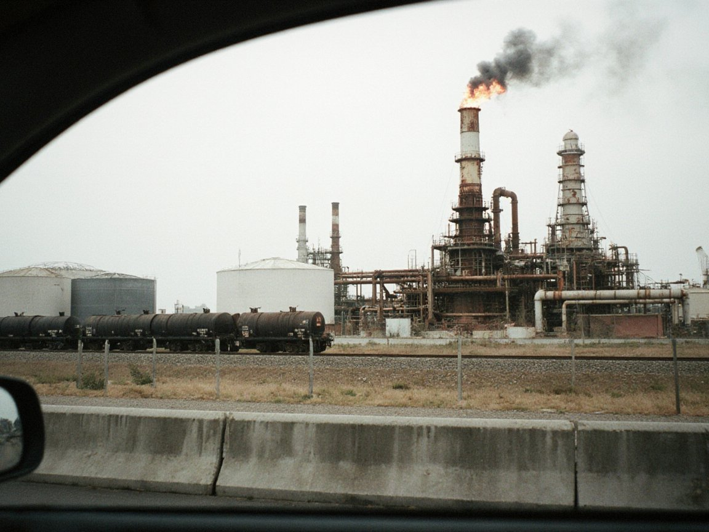

Turkish Operator Kervan Elektrik to Run Power Networks in Nurzhan, Chu and Kara-Buura
Management agreements covering most ISEZ consumers are due to be signed within a week, after the firm's earlier win in Talas.

Photo: Irad Wiki Commons
TALAS — Kervan Elektrik, the Turkish distribution operator that won the tender to manage the power networks of Talas city and Talas District earlier this year, is due to sign management agreements within a week for Nurzhan, Chu District and Kara-Buura District, the Lieutenant Governor's office said on Wednesday.
Together with Talas, the four areas cover most electricity consumers in the ISEZ. Iyık Janyl, Lower Naryn, Toktogul and Sary-Bulak will stay with the state utility for now.
Under the agreements, Irad Electric Networks, the ISEZ government's distribution utility, will keep ownership of the poles, wires and substations and remain the contracting authority. Kervan will take over day-to-day operation of the networks, meter reading and the collection of bills under a long management contract. Both sides have tied the work to the government's Network Losses Programme, which sets a target of cutting the power lost in distribution and the cost of running the grid.
"Foreign operators bring efficiency, and efficiency is what the consumer feels in the bill and in the lights staying on," Lieutenant Governor Aidar Maksat said. "The grid remains Irad's. What changes is the discipline with which it is run." He will be the government's face at the signing.
Baktygul Ismailova, deputy director of Irad Electric Networks, said Kervan's Talas team had already begun working alongside utility engineers. "Metering and billing are where a network wins or loses its money," she said. "We expect fewer outages and less waste, and our own staff will learn from the operator's methods."
In Nurzhan, shopkeepers said they would judge the change by the monthly slip. "If the bill is accurate and the power does not drop in the evening, I do not care what flag is on the van," said Sergei Panteleev, who owns a bakery in Dastgoh. Some Nurzhan business voices have asked whether the city's grid should pass to a foreign operator; the government's answer is that ownership does not move and the contract can be reviewed by the utility.
The announcement comes a week after the 13 October lifting of Toktogul's capacity to 1,440 MW, and as the question of how export revenue is shared remains open. Natural Resources Minister Chingiz Asanov said the distribution contracts concern local networks only and that the Toktogul switchyard, the national dispatch centre and the export arrangements are not part of them.
More from IradOne
- Nine Housing Complexes, 3,308 Flats Rise in Four ISEZ Cities for 2027–28 Handover October 29, 2026
- Record Harvest Lifts ISEZ Farm Output to IS 6.1 Billion in Nine Months October 29, 2026
- Maksat Proposes Small Refinery at Kochkor-Ata to Bring Fuel Closer to the South October 27, 2026
- Record 700 Gather in Nurzhan for NurGaz Oil and Gas Conference October 27, 2026